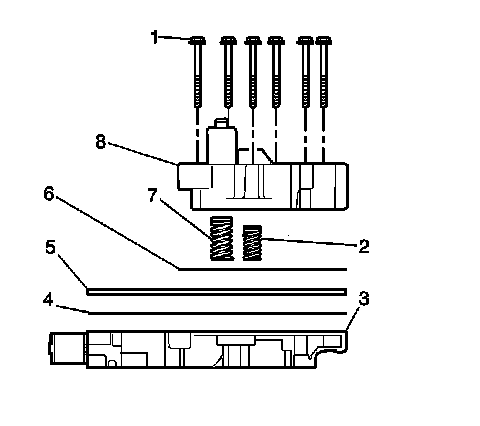
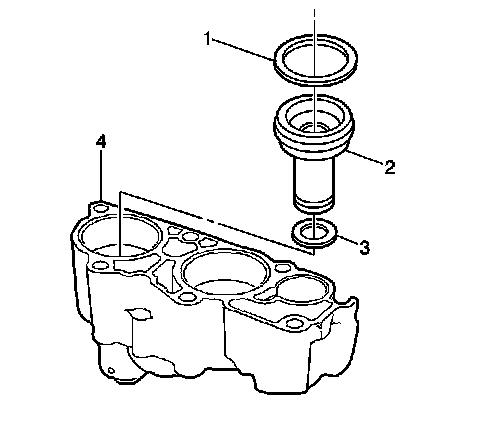
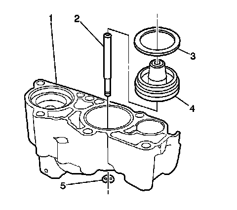
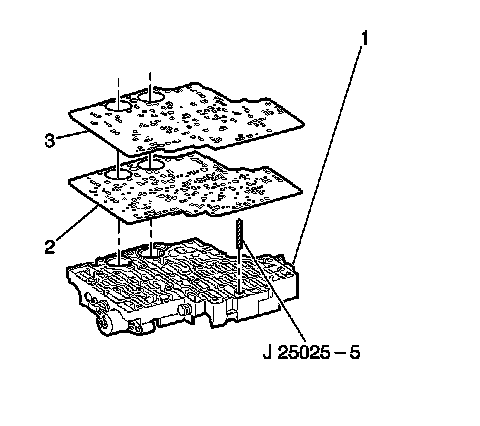
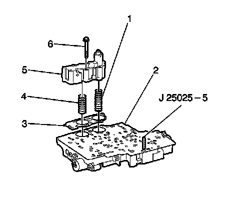
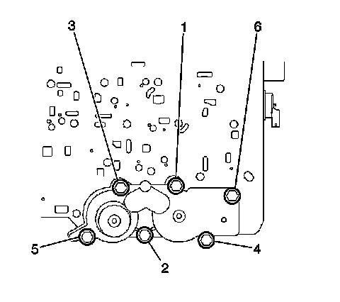

4L80-E/4L85-E - Automatic Transmission
Accumulator Housing Replacement
Tools Required
J 25025-5 Dial Indicator Mounting Post - M6 X 1.00
Removal Procedure

1. Remove the valve body.
2. Remove the 3rd and 4th clutch accumulator housing bolts (1).
3. Remove the 3rd and 4th clutch accumulator housing (8).
4. Remove the accumulator housing gasket (6). The accumulator housing gasket may be stuck to the spacer plate (5).
5. Remove the 3rd clutch accumulator piston spring (7).
6. Remove the 4th clutch accumulator piston spring (2).
7. Remove the valve body spacer plate (5).
8. Remove the valve body to spacer plate gasket (4) from the spacer plate (5).
Third and Fourth Clutch Accumulator Disassembly

Important: Apply low pressure compressed air to the hole at the top of the accumulator housing to assist with the piston removal.
1. Remove the 3rd clutch accumulator piston (2).
2. Remove the 3rd clutch accumulator piston seals (1, 3).

3. Remove the 4th clutch accumulator piston pin retainer ring (5).
4. Remove the 4th clutch accumulator piston (4) and pin (2) from the accumulator housing (1).
5. Remove the 4th clutch accumulator piston pin (2) from the accumulator housing (1).
6. Remove the 4th clutch accumulator piston seal (3) from the accumulator housing (1).
Third and Fourth Clutch Accumulator Assembly
1. Install the 3rd clutch accumulator piston inner (3) and outer (1) seals. Lubricate the 3rd clutch accumulator piston seals (1, 3) with DEXRON(R) VI automatic transmission fluid.
2. Install the 3rd clutch accumulator piston (2).
3. Install the 4th clutch accumulator piston seal (3). Lubricate the 4th clutch accumulator piston seal (3) with DEXRON(R) VI automatic transmission fluid.
4. Assemble the 4th clutch accumulator piston pin (2) with the 4th clutch accumulator piston (4).
5. Install the 4th clutch accumulator piston assembly into the accumulator housing (1).
6. Install the 4th clutch accumulator piston pin retainer ring (5) onto the 4th clutch accumulator piston pin (2).
Installation Procedure

1. Install J 25025-5 into the valve body bolt hole where the manual shaft detent roller and spring is mounted.
2. Install the valve body gasket (2) onto the accumulator housing (1).
3. Install the valve body spacer plate (3) onto the valve body gasket (2).

4. Install the third and fourth clutch accumulator housing gasket (3).
5. Install the third clutch accumulator piston spring (1). This spring is the longer of the 2 springs.
6. Install the fourth clutch accumulator piston spring (4).
7. Install the third and fourth clutch accumulator housing assembly (5) onto the control valve body assembly (2).
8. Install the 6 accumulator housing bolts (6). Start the bolts finger tight and work towards the opposite end.

Notice: Refer to Fastener Notice.
9. Tighten the accumulator housing bolts (1-6) sequentially.
Tighten the bolts to 11 N.m (97 lb in).
10. Remove the J 25025-5.
11. Install the valve body.
Important: It is recommended that transmission adaptive pressure (TAP) information be reset.
Resetting the TAP values using a scan tool will erase all learned values in all cells. As a result, the engine control module (ECM), powertrain control module (PCM) or transmission control module (TCM) will need to relearn TAP values. Transmission performance may be affected as new TAP values are learned.
12. Reset the TAP values. Refer to Transmission Adaptive Functions.